Portraits of Celebrities at Different Times of Their Lives.
SIR HENRY LOCH.
BORN 1827.
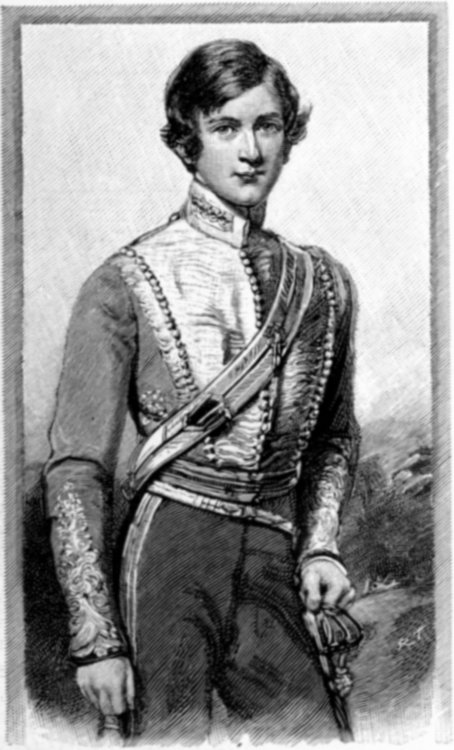
AGE 22.
From a Painting.
{kind=link}
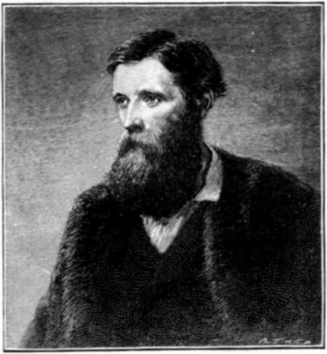
AGE 39.
From a Painting by G. Richmond, R.A.
{kind=link}
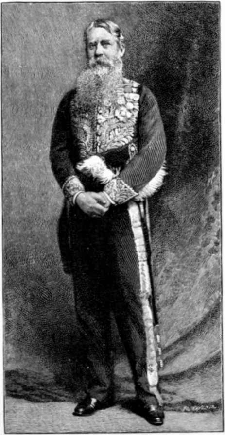
PRESENT DAY.
From a Photo. by Foster & Martin, Melbourne.
{kind=link}
Sir Henry Brougham Loch, G.C.M.G., K.C.B., whose name has recently been so prominently before the public in connection with the disturbances in Mashonaland, is Chief Commissioner at the Cape. In his diplomatic career he was taken prisoner during the war with China; and, with Mr. Boulby, the Times correspondent, was carried about in a cage by his captors, and exhibited to the natives. After his liberation he returned to England, and was appointed Governor of the Isle of Man, and subsequently Governor of Victoria; and, in 1889, was appointed to succeed Sir Hercules Robinson as Chief Commissioner at the Cape.
MADAME BELLE COLE.
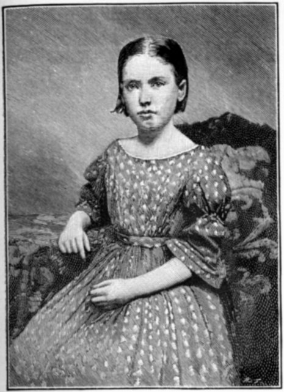
AGE 8.
From a Photograph.
{kind=link}
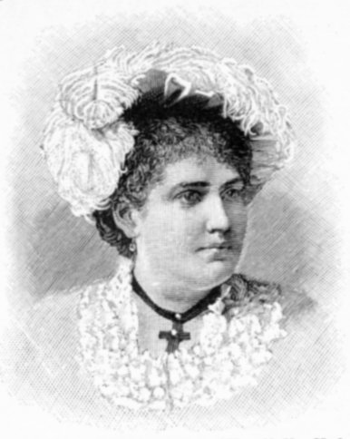
AGE 20.
From a Photo. by Naegeli, New York.
{kind=link}
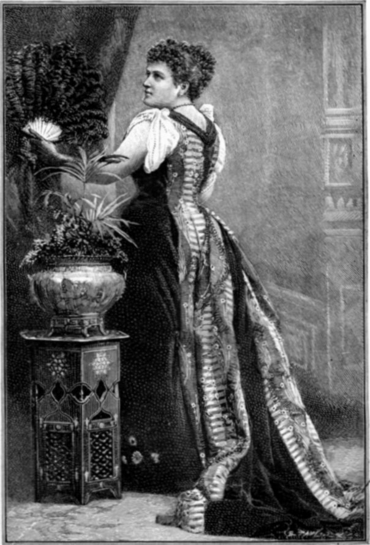
PRESENT DAY.
From a Photo. by Walery, Regent Street.
{kind=link}
It was in Jubilee Year that the British public were first charmed by the singing of this admirable American contralto. She sang in London, and successive audiences were quick to confirm the judgments of Sir Joseph Barnby and certain other critics who had heard her only in private. Her advance to the front rank of English singers was exceedingly rapid, and her position amongst us was long since made secure. Madame Cole has taken part in nearly all the great musical events in this country during the past four years. She has sung everywhere in London—with the Royal Choral Society at the Albert Hall, at the Handel Festival at the Crystal Palace, at the Ballad Concerts, at the Monday Popular Concerts, at Sir Charles Hallé's Concerts, and at Bristol, Chester, Leeds, Birmingham, and other leading towns. As seems to have been the case with most well-dowered musicians, Madame Cole's talent owes something to heredity. Musical ability, greater or less, may at all events be traced back in her family for a considerable period. Madame Cole's first distinct success in public was gained with Mr. Theodore Thomas, during that gentleman's first "grand transcontinental tour from ocean to ocean" in 1883.
THE LORD BISHOP OF PETERBOROUGH.
BORN 1843.
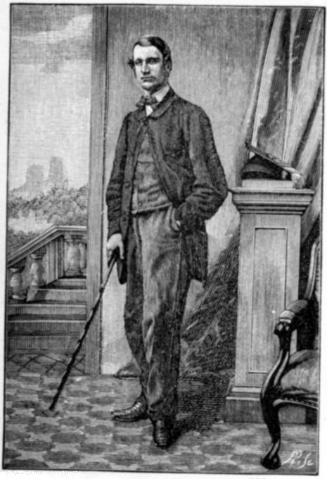
AGE 17.
From a Photograph.
{kind=link}
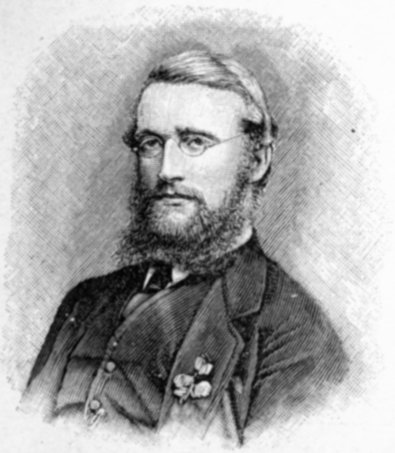
AGE 23.
From a Photo. by Wheeler & Day, Oxford.
{kind=link}
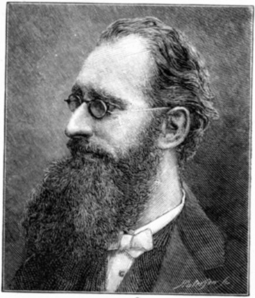
AGE 48.
From a Photo. by H.S. Mendelssohn, Newcastle.
{kind=link}
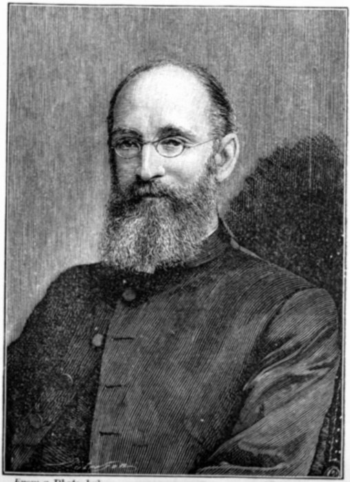
PRESENT DAY.
From a Photo. by Elliott & Fry.
{kind=link}
Professor the Rev. Mandell Creighton, M.A., was born at Carlisle, and educated at Durham Grammar School and Merton College, Oxford. He was ordained deacon in 1870 and priest in 1873, and in 1875 accepted the living of Embleton, in Northumberland. In 1884 he was elected to the newly founded professorship of Ecclesiastical History in the University of Cambridge. In 1885 he was appointed by the Crown canon residentiary of Worcester Cathedral. He is the author of several historical works: "Primer of Roman History," 1875; "The Age of Elizabeth," 1876; etc. His principal work is a "History of the Papacy During the Period of the Reformation." He was appointed Bishop of Peterborough in 1891.
LORD WANTAGE.
BORN 1832.
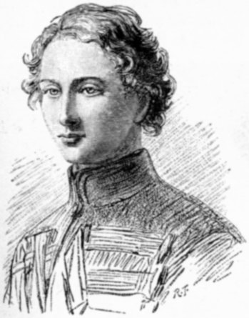
AGE 17.
From a Drawing.
{kind=link}
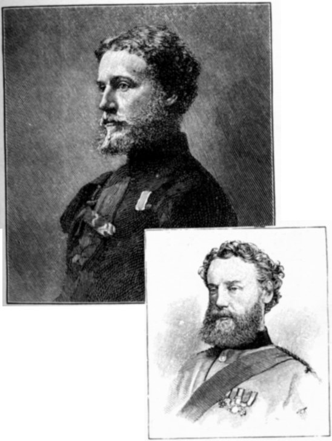
AGE 32. From a Photograph.
AGE 41. From a Photograph by Chémar Frères, Brussels.
{kind=link}
Robert James Loyd-Lindsay, K.C.B., V.C. is the eldest son of the late Lieut.-General James Lindsay. He was educated at Eton, and at an early age entered the Army. He served in the Guinea, 1854-5, part of the time as Aide-de-Camp to the Commander in-Chief. At the battle of Alma, amidst great disorder, he reformed the line and stood firm with the colours. At Inkerman he distinguished himself by charging and repulsing a strong body of Russians with a few men; for which distinctions he was justly awarded the Victoria Cross. Lord Wantage was Equerry to the Prince of Wales, 1858-9; and has been Extra Equerry to His Royal Highness since 1874. He is also the Lord Lieutenant and a County Councillor of Berkshire. He married, in 1858, Harriet Sarah, only child of the first Baron Overstone.
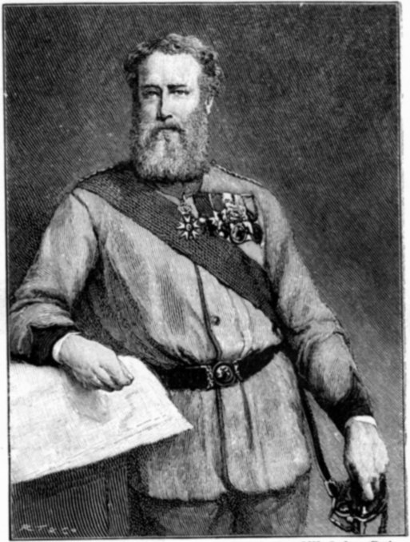
AGE 50.
From a Painting by W. Onless, R.M.
{kind=link}
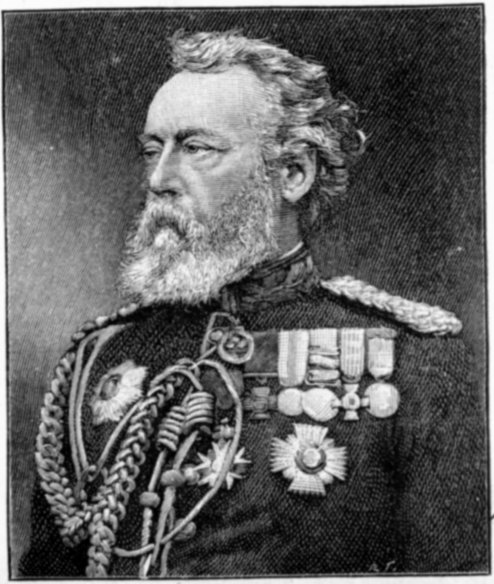
PRESENT DAY.
From a Photograph by W. & A. H. Fry, Brighton.
{kind=link}
SIR RICHARD TEMPLE, BART, M.P.
BORN 1826.
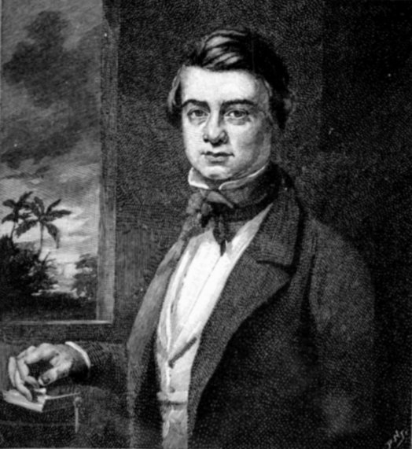
AGE 20.
From a Painting.
{kind=link}
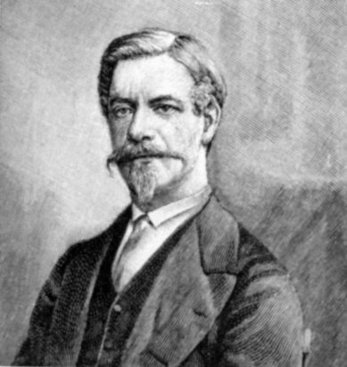
AGE 30.
From a Photo. by Southwell Brothers, Baker Street, London.
{kind=link}
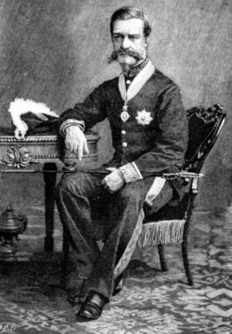
AGE 42.
From a Photo. by Bourne & Shepherd.
{kind=link}
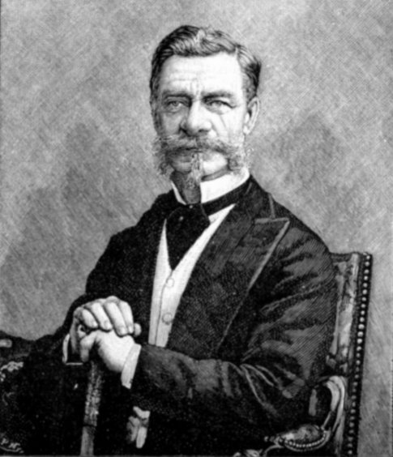
PRESENT DAY.
From a Photo. by Elliott & Fry.
{kind=link}
Sir Richard Temple, Bart., G.C.S.I., M.P., D.C.L.(Oxon), LL.D. (Cantab), of The Nash, Kempsey, near Worcester, entered the third class of the Bengal Civil Service in 1846. He was Secretary to Sir John Lawrence in the Punjab, and eventually was appointed Chief Commissioner of the Central Provinces, and the Political Resident at Hyderabad. He was Foreign Secretary to the Governor-General, and Finance Minister of India, from 1868 to 1874. In January, 1874, he was appointed to superintend the relief operations in the famine-stricken districts of Bengal. He became Lieutenant-Governor of Bengal in 1875; was created a Baronet in August, 1876; and was appointed Governor of the Presidency of Bombay in January, 1877, which office he held till March, 1880. He sits for the Kingston Division of Surrey.